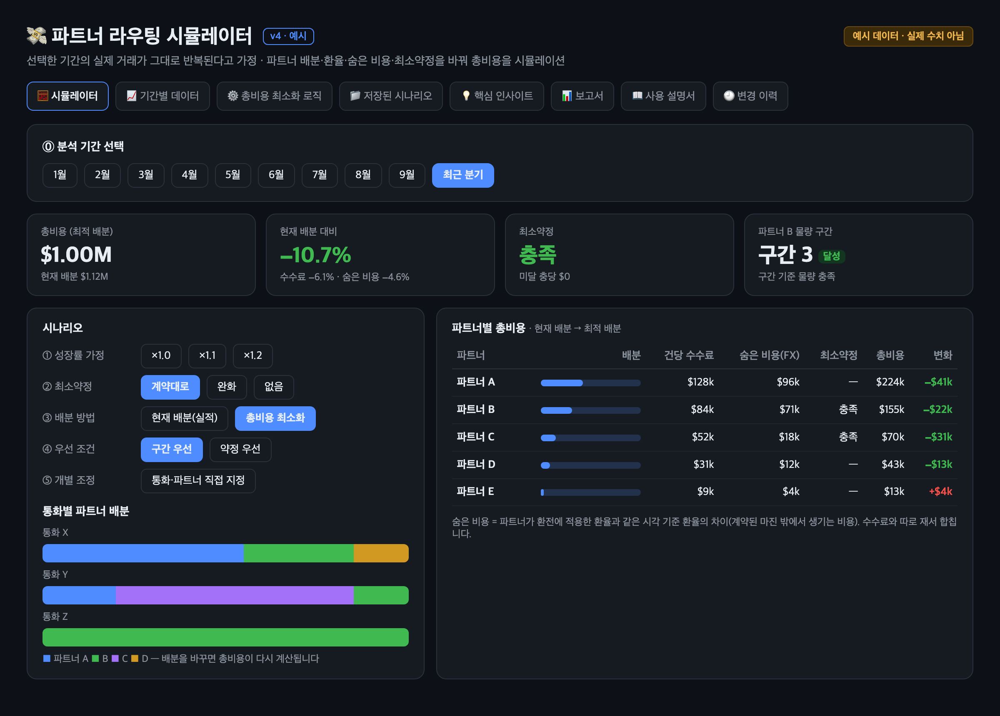

파트너 라우팅·수수료 최적화
송금을 여러 파트너에 나눠 보낼 때, 지금 배분과 달성 가능한 최적 배분의 비용 차이를 재는 시뮬레이터를 만들었습니다.

파트너마다 비용이 붙는 방식이 달랐습니다
송금은 여러 해외 파트너에 나눠 보냅니다. 파트너마다 건당 수수료, 최소 약정, 물량 구간별 요율, 환전할 때 생기는 숨은 비용, 자금을 미리 보내 두는 비용이 제각각 붙습니다. 배분을 조금 바꾸면 총비용이 얼마나 달라지는지를 한 번에 볼 수단이 없었고, 그래서 이걸 계산하는 도구를 직접 만들었습니다.
넣는 것과 나오는 것
분석할 달, 성장률 가정, 최소 약정 조건, 배분 방법(지금 배분 / 총비용 최소화)을 고르고 통화·파트너별로 직접 조정할 수 있습니다. 결과로는 파트너별 총비용 표와 지금 배분 대비 차이, 약정·물량 구간 달성 여부가 나옵니다. 숨은 비용은 파트너가 환전에 적용한 환율과 같은 시각 기준 환율의 차이를 통화·월별로 집계해, 수수료와 따로 잰 뒤 합칩니다. 팀에는 HTML 파일 하나를 링크로 공유하고, 새 달 데이터는 빌드 스크립트를 다시 돌려 채웁니다.
만들면서 바꾼 것
처음엔 분기 단위로 계산했는데, 달별로 보려고 월 단위로 바꿨습니다. 최적 배분을 찾는 탐색은 한 칸씩 바꿔 가며 내려가는 방식이라 중간 지점에서 멈추는 경우가 있어, 여러 출발점에서 다시 찾도록 고쳤습니다. 월간 평가를 만들다가 평균으로 근사한 값이 착시를 만든다는 걸 발견했고, 금액 구간별 최적을 따로 푸는 시뮬레이터를 하나 더 만들었습니다. 최적을 계산할 때는 계약서에 적힌 조건만 쓰기로 정하고, 특정 물량 구간을 계속 유지한다는 예전 전제는 뺐습니다.
숫자로 본 결과
지난해 12개월을 최적 배분으로 다시 계산하면 계약 비용(수수료·약정)이 약 8.8% 줄어드는 것으로 나왔고, 그 폭은 달에 따라 3.3%에서 21.7%까지 달랐습니다. 이 계산은 선택한 기간의 거래가 그대로 반복된다고 가정하고, 숨은 비용은 넣지 않은 값입니다. 매달 실제 배분과 최적을 비교하는 평가 리포트를 시뮬레이터와 함께 내고, 동료가 자기 AI로 같은 시뮬레이터를 만들 수 있도록 만드는 법을 가이드로 정리해 넘겼습니다.
※ 사내 기밀 보호를 위해 수치는 비율·배수 같은 상대 표현만 썼습니다.